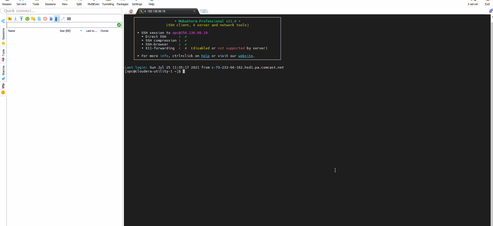

01 Impala Table Create
02 URL Presented via Impala Query
03 HTTPFS Enabled for Embedded Image within OBIEE
04 Weblogic JDBC Driver Load
05 Validate JDBC Drive Connection
06 OBIEE - DataSource Validation - Image from Impala URL HTTPFS Source
